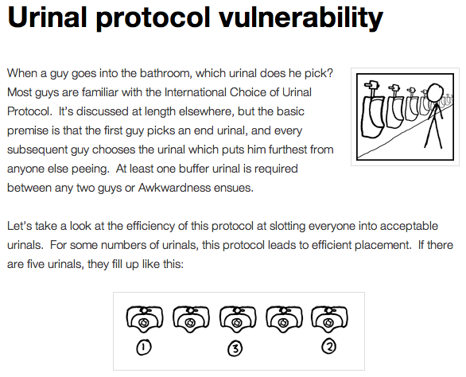

Python Web Programming

Session 2: Web Protocols
Wherein we learn about the languages that machines speak to each other
What is a Protocol?
a set of rules or conventions
governing communications
Protocols IRL
Life has lots of sets of rules for how to do things.
- What do you say when you get on the elevator?
- What do you do on a first date?
- What do you wear to a job interview?
- What do (and don't) you talk about at a dinner party?
- ...?
Protocols IRL
http://blog.xkcd.com/2009/09/02/urinal-protocol-vulnerability/
Protocols In Computers
Digital life has lots of rules too:
- how to say hello
- how to identify yourself
- how to ask for information
- how to provide answers
- how to say goodbye
Real Protocol Examples
What does this look like in practice?
Real Protocol Examples
- SMTP (Simple Message Transfer Protocol) http://tools.ietf.org/html/rfc5321#appendix-D
- POP3 (Post Office Protocol) http://www.faqs.org/docs/artu/ch05s03.html
- IMAP (Internet Message Access Protocol) http://www.faqs.org/docs/artu/ch05s03.html
- HTTP (Hyper-Text Transfer Protocol) http://en.wikipedia.org/wiki/Hypertext_Transfer_Protocol
What does SMTP look like?
SMTP (Say hello and identify yourself):
S: 220 foo.com Simple Mail Transfer Service Ready C: EHLO bar.com S: 250-foo.com greets bar.com S: 250-8BITMIME S: 250-SIZE S: 250-DSN S: 250 HELP
What does SMTP look like?
SMTP (Ask for information, provide answers):
C: MAIL FROM:<Smith@bar.com> S: 250 OK C: RCPT TO:<Jones@foo.com> S: 250 OK C: RCPT TO:<Green@foo.com> S: 550 No such user here C: DATA S: 354 Start mail input; end with <CRLF>.<CRLF> C: Blah blah blah... C: ...etc. etc. etc. C: . S: 250 OK
What does SMTP look like?
SMTP (Say goodbye):
C: QUIT S: 221 foo.com Service closing transmission channel
SMTP Characteristics
- Interaction consists of commands and replies
- Each command or reply is one line terminated by <CRLF>
- The exception is message payload, terminated by <CRLF>.<CRLF>
- Each command has a verb and one or more arguments
- Each reply has a formal code and an informal explanation
What does POP3 look like?
POP3 (Say hello and identify yourself):
C: <client connects to service port 110> S: +OK POP3 server ready <1896.6971@mailgate.dobbs.org> C: USER bob S: +OK bob C: PASS redqueen S: +OK bob's maildrop has 2 messages (320 octets)
What does POP3 look like?
POP3 (Ask for information, provide answers):
C: STAT S: +OK 2 320 C: LIST S: +OK 1 messages (120 octets) S: 1 120 S: .
What does POP3 look like?
POP3 (Ask for information, provide answers):
C: RETR 1 S: +OK 120 octets S: <server sends the text of message 1> S: . C: DELE 1 S: +OK message 1 deleted
What does POP3 look like?
POP3 (Say goodbye):
C: QUIT S: +OK dewey POP3 server signing off (maildrop empty) C: <client hangs up>
POP3 Characteristics
- Interaction consists of commands and replies
- Each command or reply is one line terminated by <CRLF>
- The exception is message payload, terminated by <CRLF>.<CRLF>
- Each command has a verb and one or more arguments
- Each reply has a formal code and an informal explanation
The codes don't really look the same, though, do they?
One Other Difference
The exception to the one-line-per-message rule is payload
In both SMTP and POP3 this is terminated by <CRLF>.<CRLF>
In SMTP, the client has this ability
But in POP3, it belongs to the server. Why?
What does IMAP look like?
IMAP (Say hello and identify yourself):
C: <client connects to service port 143> S: * OK example.com IMAP4rev1 v12.264 server ready C: A0001 USER "frobozz" "xyzzy" S: * OK User frobozz authenticated
What does IMAP look like?
IMAP (Ask for information, provide answers [connect to an inbox]):
C: A0002 SELECT INBOX S: * 1 EXISTS S: * 1 RECENT S: * FLAGS (\Answered \Flagged \Deleted \Draft \Seen) S: * OK [UNSEEN 1] first unseen message in /var/spool/mail/esr S: A0002 OK [READ-WRITE] SELECT completed
What does IMAP look like?
IMAP (Ask for information, provide answers [Get message sizes]):
C: A0003 FETCH 1 RFC822.SIZE S: * 1 FETCH (RFC822.SIZE 2545) S: A0003 OK FETCH completed
What does IMAP look like?
IMAP (Ask for information, provide answers [Get first message header]):
C: A0004 FETCH 1 BODY[HEADER]
S: * 1 FETCH (RFC822.HEADER {1425}
<server sends 1425 octets of message payload>
S: )
S: A0004 OK FETCH completed
What does IMAP look like?
IMAP (Ask for information, provide answers [Get first message body]):
C: A0005 FETCH 1 BODY[TEXT]
S: * 1 FETCH (BODY[TEXT] {1120}
<server sends 1120 octets of message payload>
S: )
S: * 1 FETCH (FLAGS (\Recent \Seen))
S: A0005 OK FETCH completed
What does IMAP look like?
IMAP (Say goodbye):
C: A0006 LOGOUT S: * BYE example.com IMAP4rev1 server terminating connection S: A0006 OK LOGOUT completed C: <client hangs up>
IMAP Characteristics
- Interaction consists of commands and replies
- Each command or reply is one line terminated by <CRLF>
- Each command has a verb and one or more arguments
- Each reply has a formal code and an informal explanation
IMAP Differences
- Commands and replies are prefixed by 'sequence identifier'
- Payloads are prefixed by message size, rather than terminated by reserved sequence
Compared with POP3, what do these differences suggest?
Protocols in Python
Let's try this out for ourselves!
Protocols in Python
Fire up your python interpreters and prepare to type.
IMAP in Python
Begin by importing the imaplib module from the Python Standard Library:
>>> import imaplib >>> dir(imaplib) ['AllowedVersions', 'CRLF', 'Commands', 'Continuation', 'Debug', 'Flags', 'IMAP4', 'IMAP4_PORT', 'IMAP4_SSL', 'IMAP4_SSL_PORT', ... 'socket', 'ssl', 'sys', 'time'] >>> imaplib.Debug = 4
Setting imap.Debug shows us what is sent and received
IMAP in Python
I've prepared a server for us to use, we'll need to set up a client to speak to it. Our server requires SSL for connecting to IMAP servers, so let's initialize an IMAP4_SSL client and authenticate:
>>> conn = imaplib.IMAP4_SSL('mail.webfaction.com')
57:04.83 imaplib version 2.58
57:04.83 new IMAP4 connection, tag=FNHG
...
>>> conn.login(username, password)
12:16.50 > IMAD1 LOGIN username password
12:18.52 < IMAD1 OK Logged in.
('OK', ['Logged in.'])
IMAP in Python
We can start by listing the mailboxes we have on the server:
>>> conn.list()
00:41.91 > FNHG3 LIST "" *
00:41.99 < * LIST (\HasNoChildren) "." "INBOX"
00:41.99 < FNHG3 OK List completed.
('OK', ['(\\HasNoChildren) "." "INBOX"'])
IMAP in Python
To interact with our email, we must select a mailbox from the list we received earlier:
>>> conn.select('INBOX')
00:00.47 > FNHG2 SELECT INBOX
00:00.56 < * FLAGS (\Answered \Flagged \Deleted \Seen \Draft)
00:00.56 < * OK [PERMANENTFLAGS (\Answered \Flagged \Deleted \Seen \Draft \*)] Flags permitted.
00:00.56 < * 2 EXISTS
00:00.57 < * 0 RECENT
00:00.57 < * OK [UNSEEN 2] First unseen.
00:00.57 < * OK [UIDVALIDITY 1357449499] UIDs valid
00:00.57 < * OK [UIDNEXT 3] Predicted next UID
00:00.57 < FNHG2 OK [READ-WRITE] Select completed.
('OK', ['2'])
IMAP in Python
We can search our selected mailbox for messages matching one or more criteria. The return value is a string list of the UIDs of messages that match our search:
>>> conn.search(None, '(FROM "cris")')
18:25.41 > FNHG5 SEARCH (FROM "cris")
18:25.54 < * SEARCH 1
18:25.54 < FNHG5 OK Search completed.
('OK', ['1'])
>>>
IMAP in Python
Once we've found a message we want to look at, we can use the fetch command to read it from the server. IMAP allows fetching each part of a message independently:
>>> conn.fetch('1', '(BODY[HEADER])')
...
>>> conn.fetch('1', '(BODY[TEXT])')
...
>>> conn.fetch('1', '(FLAGS)')
Python Means Batteries Included
So we can download an entire message and then make a Python email message object
>>> import email
>>> typ, data = conn.fetch('1', '(RFC822)')
28:08.40 > FNHG8 FETCH 1 (RFC822)
...
Parse the returned data to get to the actual message
>>> for part in data: ... if isinstance(part, tuple): ... msg = email.message_from_string(part[1]) ... >>>
IMAP in Python
Once we have that, we can play with the resulting email object:
>>> msg.keys() ['Return-Path', 'X-Original-To', 'Delivered-To', 'Received', ... 'To', 'Mime-Version', 'X-Mailer'] >>> msg['To'] 'demo@crisewing.com' >>> print msg.get_payload() If you are reading this email, ...
Neat, huh?
What Have We Learned?
- Protocols are just a set of rules for how to communicate
- Protocols tell us how to parse and delimit messages
- Protocols tell us what messages are valid
- If we properly format request messages to a server, we can get response messages
- Python supports a number of these protocols
- So we don't have to remember how to format the commands ourselves
But in every case we've seen, we could do the same thing with a socket and some strings
Break Time
Let's take a few minutes here to clear our heads.
See you back here in 10 minutes.
HTTP
HTTP is no different
HTTP
HTTP is also message-centered, with two-way communications:
- Requests (Asking for information)
- Responses (Providing answers)
What does HTTP look like?
HTTP (Ask for information):
GET /index.html HTTP/1.1 Host: www.example.com <CRLF>
What does HTTP look like?
HTTP (Provide answers):
HTTP/1.1 200 OK Date: Mon, 23 May 2005 22:38:34 GMT Server: Apache/1.3.3.7 (Unix) (Red-Hat/Linux) Last-Modified: Wed, 08 Jan 2003 23:11:55 GMT Etag: "3f80f-1b6-3e1cb03b" Accept-Ranges: none Content-Length: 438 Connection: close Content-Type: text/html; charset=UTF-8 <CRLF> <438 bytes of content>
HTTP Req/Resp Format
Both share a common basic format:
- Line separators are <CRLF> (familiar, no?)
- An required initial line (a command or a response code)
- A (mostly) optional set of headers, one per line
- A blank line
- An optional body
HTTP In Real Life
Let's investigate the HTTP protocol a bit in real life.
We'll do so by building a simplified HTTP server, one step at a time.
We'll bootstrap ourselves by using the echo_server.py file we created earlier.
Make a copy of that file now. Call it http_server_1.py. Open it in your text editors.
Viewing an HTTP Request
In a terminal, start your server running, like so:
$ python http_server_1.py making a server on 127.0.0.1:10000 waiting for a connection
This time, instead of using your echo client to make a connection, let's use a web browser
Point your favorite browser at http://localhost:10000
A Bad Interaction
First, look at the printed output from your echo server.
Second, note that your browser is still waiting to finish loading the page
Moreover, your server should also be hung, waiting for more from the 'client'
This is because we are not yet following the right protocol.
Echoing A Request
Kill your server with ctrl-c (the keyboard interrupt) and you should see some printed content:
GET / HTTP/1.1 Host: localhost:10000 User-Agent: Mozilla/5.0 (Macintosh; Intel Mac OS X 10.6; rv:22.0) Gecko/20100101 Firefox/22.0 Accept: text/html,application/xhtml+xml,application/xml;q=0.9,*/*;q=0.8 Accept-Language: en-US,en;q=0.5 Accept-Encoding: gzip, deflate DNT: 1 Cookie: __utma=111872281.383966302.1364503233.1364503233.1364503233.1; __utmz=111872281.1364503233.1.1.utmcsr=(direct)|utmccn=(direct)|utmcmd=(none); csrftoken=uiqj579iGRbReBHmJQNTH8PFfAz2qRJS Connection: keep-alive Cache-Control: max-age=0
Your results will vary from mine.
HTTP Debugging
When working on applications, it's nice to be able to see all this going back and forth. There are several apps that can help with this:
- windows: http://www.fiddler2.com/fiddler2/
- firefox: http://getfirebug.com/
- safari: built in
- chrome: built in
- IE (7.0+): built in
These tools can show you both request and response, headers and all. Very useful.
HTTP Requests
In HTTP 1.0, the only required line in an HTTP request is this:
GET /path/to/index.html HTTP/1.0 <CRLF>
As virtual hosting grew more common, that was not enough, so HTTP 1.1 adds a single required header, Host:
GET /path/to/index.html HTTP/1.1 Host: www.mysite1.com:80 <CRLF>
HTTP Responses
In both HTTP 1.0 and 1.1, a proper response consists of an intial line, followed by optional headers, a single blank line, and then optionally a response body:
HTTP/1.1 200 OK Content-Type: text/plain <CRLF> this is a pretty minimal response
Let's update our server to return such a response.
Basic HTTP Protocol
Begin by implementing a new function in your http_server_1.py script called response_ok.
It can be super-simple for now. We'll improve it later.
It needs to return our minimal response from above:
HTTP/1.1 200 OK Content-Type: text/plain <CRLF> this is a pretty minimal response
My Solution
def response_ok(): """returns a basic HTTP response""" resp = [] resp.append("HTTP/1.1 200 OK") resp.append("Content-Type: text/plain") resp.append("") resp.append("this is a pretty minimal response") return "\r\n".join(resp)
Server Modifications
Next, we need to rebuild the server loop from our echo server for it's new purpose:
It should be able to return a response built by our function when a request is finished
We could also bump up the buffer size to something more reasonable for HTTP traffic, say 1024
My Solution
# ... try: while True: print >>sys.stderr, 'waiting for a connection' conn, addr = sock.accept() # blocking try: print >>sys.stderr, 'connection - %s:%s' % addr while True: data = conn.recv(1024) if len(data) < 1024: break print >>sys.stderr, 'sending response' response = response_ok() conn.sendall(response) finally: conn.close() # ...
Test Your Work
Once you've got that set, restart your server:
$ python http_server_1.py
reload your browser pointing to http://localhost:10000 and watch the magic!
Parts of a Request
Every HTTP request must begin with a single line, broken by whitespace into three parts:
GET /path/to/index.html HTTP/1.1
The three parts are the method, the URI, and the protocol
Let's look at each in turn.
HTTP Methods
GET /path/to/index.html HTTP/1.1
Every HTTP request must start with a method
There are four main HTTP methods:
- GET
- POST
- PUT
- DELETE
- There are others, notably HEAD, but you won't see them too much
HTTP Methods
These four methods are mapped to the four basic steps (CRUD) of persistent storage:
- POST = Create
- GET = Read
- PUT = Update
- DELETE = Delete
Methods: Safe <--> Unsafe
HTTP methods can be categorized as safe or unsafe, based on whether they might change something on the server:
- Safe HTTP Methods
- GET
- Unsafe HTTP Methods
- POST
- PUT
- DELETE
This is a normative distinction, which is to say be careful
Methods: Idempoent <--> ???
HTTP methods can be categorized as idempotent, based on whether a given request will always have the same result:
- Idempotent HTTP Methods
- GET
- PUT
- DELETE
- Non-Idempotent HTTP Methods
- POST
Again, normative. The developer is responsible for ensuring that it is true.
HTTP Method Handling
Let's keep things simple, our server will only respond to GET requests.
We need to create a function that parses a request and determines if we can respond to it: parse_request.
If the request method is not GET, our method should raise an error
Remember, although a request is more than one line long, all we care about here is the first line
My Solution
def parse_request(request): first_line = request.split("\r\n", 1)[0] method, uri, protocol = first_line.split() if method != "GET": raise NotImplementedError("We only accept GET") print >>sys.stderr, 'request is okay'
Update the Server
We'll also need to update the server code. It should
- save the request as it comes in
- check the request using our new function
- send an OK response if things go well
My Solution
# ... conn, addr = sock.accept() # blocking try: print >>sys.stderr, 'connection - %s:%s' % addr request = "" while True: data = conn.recv(1024) request += data if len(data) < 1024 or not data: break parse_request(request) print >>sys.stderr, 'sending response' response = response_ok() conn.sendall(response) finally: conn.close() # ...
Test Your Work
Quit and restart your server, now that you've updated the code.
Reload your browser. It should work fine.
We can use the echo_client.py script from yesterday to test our error condition. In a second terminal window run the script like so:
$ python echo_client.py "POST / HTTP/1.0\r\n\r\n"
You'll have to quit the client pretty quickly with ctrl-c
Error Responses
Okay, so the outcome there was pretty ugly. The client went off the rails, and our server has terminated as well.
The HTTP protocol allows us to handle errors like this more gracefully.
Enter the Response Code
HTTP Response Codes
HTTP/1.1 200 OK
All HTTP responses must include a response code indicating the outcome of the request.
- 1xx (HTTP 1.1 only) - Informational message
- 2xx - Success of some kind
- 3xx - Redirection of some kind
- 4xx - Client Error of some kind
- 5xx - Server Error of some kind
The text bit makes the code more human-readable
Common Response Codes
There are certain HTTP response codes you are likely to see (and use) most often:
- 200 OK - Everything is good
- 301 Moved Permanently - You should update your link
- 304 Not Modified - You should load this from cache
- 404 Not Found - You've asked for something that doesn't exist
- 500 Internal Server Error - Something bad happened
Do not be afraid to use other, less common codes in building good apps. There are a lot of them for a reason. See http://www.w3.org/Protocols/rfc2616/rfc2616-sec10.html
Handling our Error
Luckily, there's an error code that is tailor-made for this situation.
The client has made a request using a method we do not support
405 Method Not Allowed
Let's add a new function that returns this error code. It should be called response_method_not_allowed
My Solution
def response_method_not_allowed(): """returns a 405 Method Not Allowed response""" resp = [] resp.append("HTTP/1.1 405 Method Not Allowed") resp.append("") return "\r\n".join(resp)
Server Updates
Again, we'll need to update the server to handle this error condition correctly. It should
- catch the exception raised by the parse_request function
- return our new error response as a result
- if no exception is raised, then return the OK response
My Solution
# ... while True: data = conn.recv(1024) request += data if len(data) < 1024 or not data: break try: parse_request(request) except NotImplementedError: response = response_method_not_allowed() else: response = response_ok() print >>sys.stderr, 'sending response' conn.sendall(response) # ...
Test Your Work
Start your server (or restart it if by some miracle it's still going).
Then test this out by using the echo_client.py script again:
$ python echo_client.py "POST / HTTP/1.1\r\n\r\n" connecting to localhost port 10000 sending "POST / HTTP/1.1\r\n\r\n" received "HTTP/1.1 405 Met" received "hod Not Allowed closing socket
HTTP - Resources
We've got a very simple server that accepts a request and sends a response. But what happens if we make a different request?
In your web browser, enter the following URL:
http://localhost:10000/page
What happened? What happens if you use this URL:
http://localhost:10000/section/page?
HTTP - Resources
We expect different urls to result in different responses.
But this isn't happening with our server, for obvious reasons.
It brings us back to the second element of that first line of an HTTP request.
The Return of the URI
HTTP Requests: URI
GET /path/to/index.html HTTP/1.1
Every HTTP request must include a URI used to determine the resource to be returned
Resource? Files (html, img, .js, .css), but also:
- Dynamic scripts
- Raw data
- API endpoints
Responding to URIs
We should expand our server's capabilities so that it can make different responses to different URIs.
To simplify things for ourselves, let's allow our server to serve up directories and files from our own filesystem.
This will be much like other common HTTP servers, like Apache or nginx.
Save your http_server_1.py module as http_server_2.py. If you've fallen behind, you can find a copy of http_server_2.py in the class resources folder.
Getting a URI
First, let's update our parse_request method so that it returns the URI it parses from the first line of our request:
def parse_request(request): first_line = request.split("\r\n", 1)[0] method, uri, protocol = first_line.split() if method != "GET": raise NotImplementedError("We only accept GET") print >>sys.stderr, 'serving request for %s' % uri return uri
Next, we need to write a function that handles this uri for us: resolve_uri.
What Should It Do?
Let's think for a bit about the specs for our function:
- It should take a URI as the sole argument
- It should use the pathname represented by the URI as a search path for a filesystem location
- It should have a 'home directory', someplace that serves as the root of the search path.
- If the URI represents a directory, the method should return a directory listing
- If the URI represents a file of some sort, the method should return the contents of that file.
- If the URI does not map to a real location, it should raise an exception.
My Solution
# at the top of the file: import os # add this function def resolve_uri(uri): """return the filesystem resources identified by 'uri'""" home = 'webroot' # this is relative to the location of # the server script, could be a full path filename = os.path.join(home, uri.lstrip('/')) if os.path.isfile(filename): contents = open(filename, 'rb').read() return contents: elif os.path.isdir(filename): listing = "\n".join(os.listdir(filename)) return listing else: raise ValueError("Not Found")
Returning Content
Now we have to do something with the return value of that function.
The value should be returned to the client as a response.
Let's update our response_ok function to incorporate this stuff.
Remember, this new material is the body of our response.
My Solution
def response_ok(body): """returns a basic HTTP response""" resp = [] resp.append("HTTP/1.1 200 OK") resp.append("Content-Type: text/plain") resp.append("") resp.append(body) return "\r\n".join(resp)
Handling The Error
Our resolve_uri function also adds a new possible error condition, one that maps nicely to a common HTTP response code.
We'll need a function that generates that response for us
def response_not_found(): """return a 404 Not Found response""" resp = [] resp.append("HTTP/1.1 404 Not Found") resp.append("") return "\r\n".join(resp)
Server Updates
Finally, we need to update the code in our server loop to handle this new stuff.
- It should bind the return value of parse_request to a symbol
- It should pass that value in to our new resolve_uri function
- It should bind the return value of that function to another symbol
- It should use that value to build an OK response
- It should return that response to the client via the open connection socket.
- If the ValueError from resolve_uri is raised, it should handle it by returning the proper response.
My Solution
# ... while True: data = conn.recv(1024) request += data if len(data) < 1024 or not data: break try: uri = parse_request(request) content = resolve_uri(uri) except NotImplementedError: response = response_method_not_allowed() except ValueError: response = response_not_found() else: response = response_ok(content) print >>sys.stderr, 'sending response' conn.sendall(response) # ...
Test Your Work
To test our new functionality, we need a bit of extra stuff, like a directory with interesting material in it.
In the class resources folder, I've provided a suitable directory. It's called webroot.
Copy that directory and all its contents into the location where you've been creating your server files.
Restart your server: $ python http_server_2.py
What's Missing?
Point your browser at http://localhost:10000/.
Try http://localhost:10000/a_web_page.html.
How about http://localhost:10000/images/JPEG_example.jpg?
What's going wrong here?
HTTP Headers
The problem is that we're identifying all the content we return as plain text.
We can fix this by passing information about exactly what we are returning as part of the response.
HTTP provides for this type of thing with the generic idea of Headers
HTTP Headers
Both requests and responses can contain headers of the form Name: Value
- HTTP 1.0 has 16 valid headers, 1.1 has 46
- Any number of spaces or tabs may separate the name from the value
- If a header line starts with spaces or tabs, it is considered part of the value for the previous header
- Header names are not case-sensitive, but values may be
read more about HTTP headers: http://www.cs.tut.fi/~jkorpela/http.html
Content-Type Header
A very common header used in HTTP responses is Content-Type. It tells the client what to expect.
- uses mime-type (Multi-purpose Internet Mail Extensions)
- foo.jpeg - Content-Type: image/jpeg
- foo.png - Content-Type: image/png
- bar.txt - Content-Type: text/plain
- baz.html - Content-Type: text/html
There are many mime-type identifiers: http://www.webmaster-toolkit.com/mime-types.shtml
Mapping Mime-types
By mapping a given file to a mime-type, we can write a header.
The standard lib module mimetypes does just this.
We can guess the mime-type of a file based on the filename or map a file extension to a type:
>>> import mimetypes >>> mimetypes.guess_type('file.txt') ('text/plain', None) >>> mimetypes.types_map['.txt'] 'text/plain'
Build a Content-type Header
We'll need to do a couple of things:
- Extend the resolve_uri function to return content and mime-type
- Extend the response_ok function to accept both content and mime-type as arguments
- Extend the response_ok function to write a Content-Type: XYZ header
- Adjust the server loop appropriately
My Solution
for resolve_uri:
# at the top of the file: import mimetypes # in the existing function: # ... if os.path.isfile(filename): ext = os.path.splitext(filename)[1] mimetype = mimetypes.types_map.get(ext, 'text/plain') contents = open(filename, 'rb').read() return contents, mimetype elif os.path.isdir(filename): listing = "\n".join(os.listdir(filename)) return listing, 'text/plain' else: raise ValueError("Not Found")
My Solution
for response_ok:
def response_ok(body, mimetype): """returns a basic HTTP response""" resp = [] resp.append("HTTP/1.1 200 OK") resp.append("Content-Type: %s" % mimetype) resp.append("") resp.append(body) return "\r\n".join(resp)
My Solution
for the server loop:
# ... try: uri = parse_request(request) content, mimetype = resolve_uri(uri) except NotImplementedError: response = response_method_not_allowed() except ValueError: response = response_not_found() else: response = response_ok(content, mimetype) print >>sys.stderr, 'sending response' conn.sendall(response) # ...
Test Your Work
Now, restart your server script and point your browser at various URLs, starting from the root (http://localhost:10000/).
Much better results, no?
A Few Steps Further
- Format directory listings as actual HTML, so you can make file names into links.
- Add a GMT Date: header in the proper format (RFC-1123) to responses. hint: see email.utils.formatdate in the python standard library
- Add a Content-Length: header for OK responses that provides a correct value.
- Protect your server against errors by providing, and using, a function that returns a 500 Internal Server Error response.
- Instead of returning the python script in webroot as plain text, execute the file and return the results as HTML.
Wrap-Up
For comparison, you might wish to take a look at the code in the Python Standard Library's SocketServer, BaseHTTPServer and SimpleHTTPServer modules:
>>> import SocketServer, BaseHTTPServer, SimpleHTTPServer >>> SocketServer.__file__ '/full/path/to/your/copy/of/SocketServer.py' ...
See You Tomorrow!